Big Orange Crayonmusical thingsLadyfest (many bands, including K. and the Naysayer) Easthampton Town Hall (by way of The Flywheel) August 24th, 2001 This was an awesome show, but to do a review would take a lot more time than I have right now since it's the first day of classes and there were seven bands. I had a good time, though. I ended up having to go it alone, but still. The show got out at a little after one in the morning and it's a two hour drive home, but it was still worth it. Here are the pictures, anyway. I'm not quite sure of the names of some of the bands, so my apologies if I get them wrong. I forgot that while my F3 will show the whole frame, machine printers crop the edges, so some people have bits of their heads cut off or the framing is kind of weird. I want a film scanner... Mimi & Devotion (I think?): 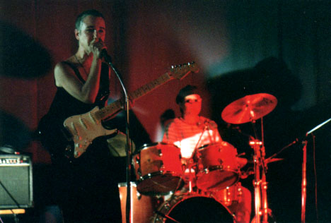 You would never guess that she's fourty-five years old I don't remember her name, but going along with one of her songs, I'll call her the Coffee Fairie: 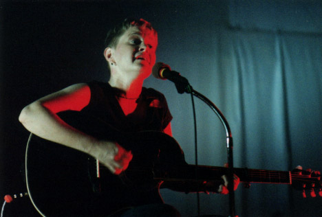 I think this band is Pazza Ragazza 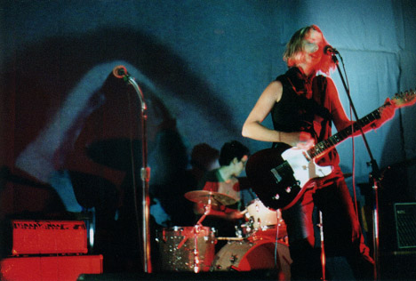 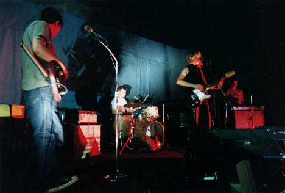 Picastro 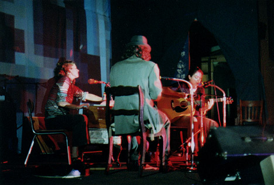 V For Vendetta 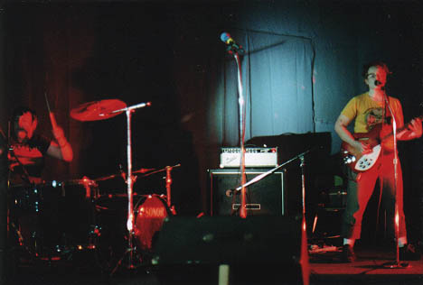 The Naysayer 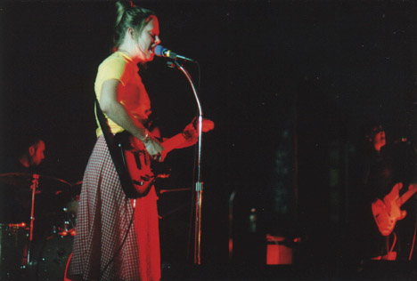 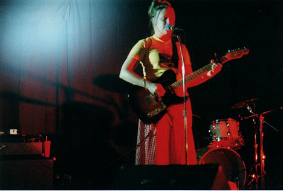 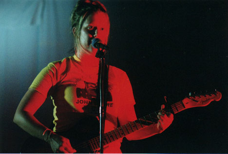 K. 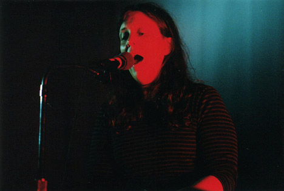 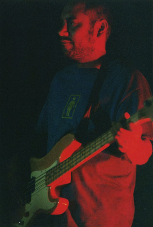 MIggy was there! 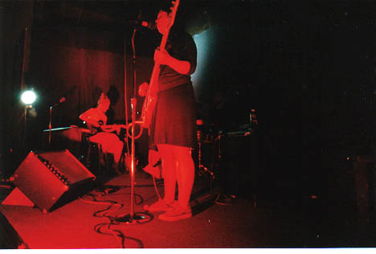 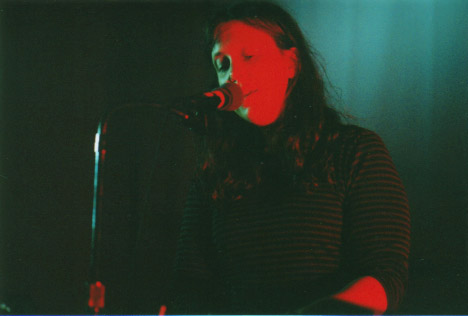 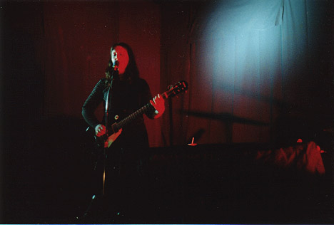 Karla is awesome. And she played all three of my favorite songs by her: "Tiger Dare", "Regular Girl" and "Complete" so yay! |